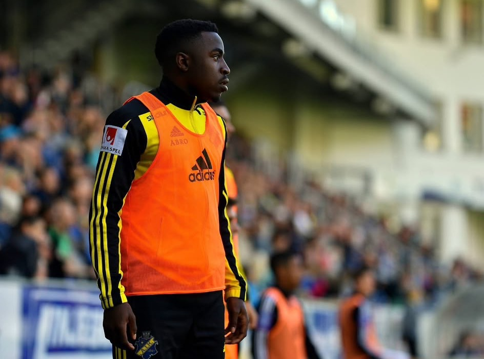
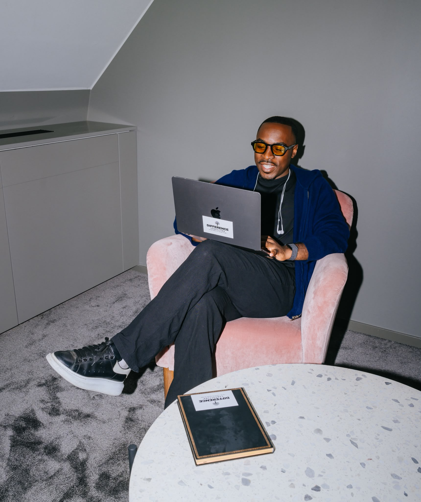

Rickson Mansiamina
Riktningsvägledare.
Grundare av Difference Consulting och Differencismen.
Jag arbetar med fotbollsspelare, ledare och människor utanför idrotten. Vägen dit började med ett arbete med mig själv.

Jag lärde mig prestera.
Långt innan jag lärde mig leda mig själv.
Jag har erfarenhet från fotbollsmiljöer i Allsvenskan, Superettan, division 1 och Finlands högstaliga. Jag har också representerat Sveriges U19-landslag.
Fotbollen gav mig en roll och ett sammanhang. Med tiden började jag mäta mitt värde i hur jag presterade.

Jag fick inget stort svar.
Jag fick ett arbete.

Det började med papper och penna. Jag skrev ner vad jag uppskattade hos mig själv och vad jag behövde utveckla.
Jag sökte stöd och nya perspektiv hos människor med andra livserfarenheter. Jag utbildade mig inom kognitiv beteendeterapi, psykologiskt kapital och mental coaching.
Jag ville skapa den vägledning jag själv hade behövt. När jag började vägleda andra blev det tydligt hur olika samma miljö kunde upplevas. Jag behövde lyssna och förstå varje människas sammanhang.
2024 grundade jag Difference Consulting. Ur mina erfarenheter, utbildningen och arbetet med andra växte Differencismen fram — filosofin och systemet för självledarskap.
2025 gav jag ut The Difference Playbook.
BrickByBoringBrick. StepByBoringStep.
Fotbollen är min spets.
Människan är grunden.
Som riktningsvägledare arbetar jag med hur människor möter krav, förändring och prestation.
Jag spelar fortfarande fotboll. Och jag fortsätter träna på att hålla isär hur det går för mig och vem jag är.
LED DIG SJÄLV. FÖRST.